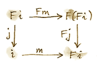

25 F-Algebras (Sketch)
เราได้เห็นการกำหนดรูปสูตรหลายแบบของmonoid ในฐานะset ในฐานะcategoryที่มีวัตถุเดี่ยว ในฐานะวัตถุในcategoryแบบmonoidal เราสามารถจะดึงสิ่งที่น่าสนใจออกมาได้เท่าไหร่จากแนวคิดที่เรียบง่ายนี้
เรามาลองดู นำนิยามนี้ของmonoidในฐานะset\(m\)กับคู่ของfunctionsว่า
\[ \begin{align*} \mu & :: m\times{}m \to m \\ \eta & :: 1 \to m \end{align*} \]
ในที่นี้\(1\)คือวัตถุสุดท้ายใน\(\textbf{Set}\)ที่คือsetที่มีสมาชิกเดียว functionแลกนิยามการคูณ (มันนำคู่ของสมาชิกและreturns productของมัน) ในตัวที่สองเลือกสมาชิกunitจาก\(m\) ไม่กับทุกๆการเลือกของfunctionsทั้งสองกับsignaturesเหล่านี้ก่อให้เกิดmonoid สำหรับสิ่งนี้เราต้องการที่จะบังคับใช้เงื่อนไขเพิ่มเติมนั้นคือกฎของการสลับกลุ่มและunit แต่เราจะมาลืมเกี่ยวกับมันสักครู่และแค่สนใจ”monoidsที่เป็นไปได้” คู่ของfunctionsนั้นคือสมาชิกของproductแบบCartesianของสองชุดของfunctions เรารู้ว่าชุดเหล่านี้อาจจะถูกแสดงแทนในฐานะวัตถุexponentialคือ
\[ \begin{align*} \mu & \in m^{m\times{}m} \\ \eta & \in m^1 \end{align*} \]
productแบบCartesianของสองชุดเหล่านี้คือ
\[ m^{m\times{}m}\times{}m^1 \]
ในการใช้พีชคณิตในระดับมัธยม(ที่ใช้งานได้ใรทุกๆcategoryแบบclosedและCartesian) เราสามารถเขียนใหม่ได้ว่า
\[ m^{m\times{}m + 1} \]
ในเครื่องหมาย\(+\)เป็นตัวแสงแทนสำหรับcoproductใน\(\textbf{Set}\) เราได้แค่แทนที่คู่ของfunctionsกับfunctionเดี่ยวนั้นคือสมาชิกของset
\[ m\times{}m + 1 \to m \]
สมาชิกใดๆก็ตามของsetเหล่านี้ของfunctionsนั้นเป็นสิ่งที่เป็นไปได้ที่จะเป็นmonoid
ความสวยงามของการแปลงแบบนี้คือการที่ว่ามันนำไปสู่การgeneralizeที่น่าสนใจ ตัวอย่างเช่น อะไรคือวิธีการที่เราจะอธิบายgroupโดนการใช้ภาษานี้? groupคือmonoidที่มีหนึ่งfunctionมากขึ้นที่กำหนดinverseไปกับทุกสมาชิก ส่วนหลังคือfunctionของtype\(m\rightarrow m\) ในฐานะตัวอย่าง จำนวนเต็มก่อให้เกิดgroupโดยที่มีการบวกในฐานะoperationแบบbinary ศูนย์ในฐานะunit และการติดลบในฐานะinverse ในการในการนิยามgroup เราอาจจะเริ่มด้วยfunctionsสามตัวว่า
\[ \begin{align*} m\times{}m \to m \\ m \to m \\ 1 \to m \end{align*} \]
เหมือนก่อนหน้านี้ เราสามารถรวมสามตัวเหล่านี้ไปยังชุดของfunctions
\[ m\times{}m + m + 1 \to \]
เราเริ่มมากับoperatorแบบbinaryตัวหนึ่ง(การบวก) operatorแบบunary(negation)และoperatorแบบnullaryตัวหนึ่ง(identityที่ในที่นี้คือศูนย์) เราได้รวมมันไปยังfunctionหหนึ่ง ในทุกๆfunctionsกับsignatureนี้นิยามgroupsที่เป็นไปได้
เราสามารถไปยังแบบนี้ ตัวอย่างเช่นในการนิยามring เราอาจจะเพิ่มoperatorแบบbinaryหนึ่งและoperatorแบบnullaryหนึ่งและอื่นๆ ในแต่ละครั้งเราจบลงที่typeของfunctionที่ทางด้านช้ายคือการบวกของสิ่งที่ยกกำลัง(ก็อาจจะรวมไปถึงยกกำลัง)และในทางด้านขวาเป็นsetตัวมันเอง
ในตอนนี้เราสามารถไปอย่างสุดเหวี่ยงกับการgeneralize ตัวอย่างเช่น เราสามารถแทนที่setsกับวัตถุและfunctionsกับmorphisms เราสามารถนิยามoperatorsแบบn-aryในฐานะmorphismsจากproductsแบบn-ary มันหมายความว่าเราต้องการcategoryที่สามารถรับรองproductsที่มีที่สิ้นสุด สำหรับoperatorsแบบnullaryเราต้องการการมีอยู่ของวัตถุสุดท้าย ดังนั้นเราต้องการcategoryแบบCartesian ในการที่ได้จะรวมoperatorsเหล่านี้ เราต้องการexponentials ดังนั้นคือcategoryแบบCartesian closed สุดท้ายแล้ว เราต้องการcoproductsในการทำให้การเล่นกับพีชคณิตนั้นจบชักที่
ในทางกลับกัน เราสามารถแค่ลืมเกี่ยวกับวิธีการที่เราหาสูตรของเราและเพ่งเล็งไปยังproductสุดท้าย ผลบวกของproductsในด้านช้ายของmorphismของเราได้นิยามendofunctor ถ้าเราเลือกendofunctor\(F\)ทั่วๆไปจะเป็นอะไร? ในกรณีนี้เราไม่ต้องที่บังคับเงื่อนไขบนcategoryของเรา สิ่งที่เราได้มาเรียกว่าF-algebra
F-algebraคือtripleที่ประกอบด้วยendofunctor\(F\) วัตถุ\(a\)และmorphism
\[ F\ a \to a \]
วัตถุนั้นมันจะถูกเรียกว่าcarrier วัตถุข้างใต้หรือในบริบทของการเขียนโปรแกรมคือtypeของcarrier morphismนั้นมักจะถูกเรียกว่าfunctionการประเมินหรือmapโครงสร้าง คิดถึงfunctor\(F\)ในฐานะการสร้างexpressionsและmorphismในฐานะการประเมินพวกมัน
ในที่นี้นิยามของHaskellของF-algebra
type Algebra f a = f a -> aมันตรงกับalgebraกับfunctionการประเมิน
ในตัวอย่างของmonoid functorที่เราสนใจคือ
data MonF a = MEmpty | MAppend a aนี้คือHaskellสำหรับ\(1+a\times a\)(จำได้ว่าdata structureแบบalgebraic)
ringอาจจะถูกนิยามโดยการใช้functorเหล่านี้
data RingF a = RZero
| ROne
| RAdd a a
| RMul a a
| RNeg aที่ในHaskell\(1 + 1 + a\times{}a + a\times{}a + a\)
มันคือตัวอย่างสำหรับringคือsetของintegers เราสามารถเลือกIntegerในฐานะtypeแบบcarrierและนิยามfunctionว่า
evalZ :: Algebra RingF Integer
evalZ RZero = 0
evalZ ROne = 1
evalZ (RAdd m n) = m + n
evalZ (RMul m n) = m * n
evalZ (RNeg n) = -nได้มีF-algebrasมากขึ้นที่มาจากfunctorเดียวกันRingF ตัวอย่างเช่นpolynomialsก่อให้เกิดringและรวมไปถึงmatricesกำลังสอง
ในที่คุณได้เห็น บทบาทของfunctorนั้นในการสร้างexpressionsที่สามารถถูกประเมินของalgebra ถึงในตอนนี้แล้ว เราได้แต่เห็นexpressionsที่เรียบง่าย เรานั้นมักจะสนใจในexpressionsที่ซับซ้อนมากขึ้นที่สามารถถูกนิยามโดยการใช้recursion
25.1 Recursion
วิธีหนึ่งในการสร้างtrees expressionทั่วๆไปคือการแทนที่ตัวแปลaภายในนิยามของfunctorกับrecursion ตัวอย่างเช่นexpressionทั่วๆไปในringนั้นสร้างโดยdata structureแบบtreeอย่าง
data Expr = RZero
| ROne
| RAdd Expr Expr
| RMul Expr Expr
| RNeg Exprเราสามารถแทนที่ตัวประเมินringเริ่มต้นกับรูปแบบrecursive
evalZ :: Expr -> Integer
evalZ RZero = 0
evalZ ROne = 1
evalZ (RAdd e1 e2) = evalZ e1 + evalZ e2
evalZ (RMul e1 e2) = evalZ e1 * evalZ e2
evalZ (RNeg e) = -(evalZ e)สิ่งนี้นั้นไม่มีผลในมาปฏิบัติเพราะว่าเรานั้นถูกบังคับในการแสดงแทนทุกๆจำนวนเต็มในฐานะการบวกกันของเลขหนึ่งแต่มันจะเป็นสิ่งที่จำเป็น
แต่อะไรคือวิธีการที่เราจะอธิบายexpression treesโดยการใช้ภาษาของF-algebras? เราต้องการในแบบไดก็ตามที่ทำให้เป็นสูตรของขบวนการของการแทนที่ตัวแปลtypeอิสระในนิยามของคำนิยามของfunctorของเราในแบบrecursively คู่กับผลของการแทนที่ ลองจินตนาการการทำนี้ให้เป็นขั้น เริ่มแรกนิยามtreeที่มีความลึกเท่ากับหนึ่งว่า
type RingF1 a = RingF (RingF a)เรากำลังเติมเต็มหลุมในนิยามของRingFกับtreeที่ไม่มีความลึกที่สร้ามมาโดยRingF a treeที่มีความลึกเท่ากับสองสามารถได้มาอย่างเดี่ยวกัน
type RingF2 a = RingF (RingF (RingF a))ที่เราก็สามารถถูกเขียนว่า
type RingF2 a = RingF (RingF1 a)ทำตามขบวนนี้เราสามารถเขียนในสมการทางสัญลักษณ์ว่า
type RingF_{n+1} a = RingF (RingF_{n} a)ในแนวคิด หลังจากการทำขบวนการนี้ช้ำหลายๆครั้งเราจะจบที่Exprของเรา สังเกตว่าExprไม่ได้ขึ้นกับa จุดเริ่มแรกของการเดินทางของเราไม่สำคัญ เราก็จะกลับมาที่เดิมเสมอ นี้นั้นไม่ถูกต้องเสมอไปสำหรับendofunctorทั่วๆไปในcategoryทั่วๆไปแต่สิ่งต่างๆในcategory\(\textbf{Set}\)นั้นไม่ก่อให้เกิดปัญหา
แน่นอนว่านี้คือข้อโต้เถียงที่ไม่เข้มงวดและผมจะทำให้มันนั้นเข้มงวดมากขึ้นหลังจากนี้
การใช้endofunctorหลายๆครั้งไม่มีที่สิ้นสุดได้สร้างจุดคงที่(fixed point)และวัตถุนั้นถูกนิยามโดย
\[ \operatorname{Fix} f = f (\operatorname{Fix} f) \]
แนวคิดข้างหลังนิยามนี้คือว่า เนิื่องว่าเราได้ทำการใช้งาน\(f\)ที่ไม่มีที่สิ้นสุดในการได้มาที่\(\operatorname{Fix} f\) การใช้งานมันในอีกรอบหนึ่งไม่ได้เปลี่ยนอะไรเลย ในHaskell นิยามของจุดคงที่คือ
newtype Fix f = Fix (f (Fix f))กล่าวได้ว่า นี้อาจจะอ่านได้ง่ายกว่าถ้าชื่อของconstructorนั้นแตกต่างจากชื่อของtypeที่ถูกนิยามในว่า
newtype Fix f = In (f (Fix f))แต่เราจะคงอยู่กับสัญลักษณ์ที่ได้รับการยอมรับ การสร้างFix(หรือInถ้าคุณชอบมากกว่า)สมารถถูกมองในฐานะfunction
Fix :: f (Fix f) -> Fix fนั้นก็คือfunctionที่ปลอกชั้นๆหนึ่งของการใช้งานของfunctor
unFix :: Fix f -> f (Fix f)
unFix (Fix x) = xสองfunctionนั้นคือinverseซึ่งกันและกันห เราจะใช้functionsเหล่านี้ภายหลัง
25.2 CategoryของF-Algebra
นี้คือเคล็ดลับที่เก่าที่สุดในหนังสือเล่มนี้คือไม่ว่าคุณจะคิดได้ว่าเกี่ยวกับวิธีการการสร้างวัตถุใหม่ ต้องดูที่ว่าพวกมันก่อให้เกิดcategoryหรือเปล่า ไม่แปลกใจที่algebraข้างบนendofunctor\(F\)ที่ให้มาก่อให้เกิดcategory วัตถุในcategoryนั้นคือalgebraต่างๆที่คือคู่ที่ประกอบด้วยobjectพาหะ(carrier)และmorphism \(F \ a \to a\) ที่ทั้งคู่มาจากcategoryดั้งเดิม
ในการที่ทำให้ภาพรวมสมบูรณ์ เราต้องการที่จะนิยามmorphismsในcategoryของF-Algebra morphismต้องโยงalgebra\((a,f)\)ไปยังอีกalgebraหนึ่ง\((b,g)\) เราจะมานิยามมันในฐานะmorphism\(m\)ที่โยงพาหะของพวมมันเข้าด้วยกัน (มันจะไปจาก\(a\)ไปยัง\(b\)ในcategoryดั้งเดิม) ไม่แค่morphismอะไรก็ได้ที่สามารถจะทำได้เพราะว่าเราต้องการให้มันเข้าได้กับตัวประเมินทั้งสอง(เราเรียกmorphismที่คงไว้ที่โครงสร้างนี้ว่าhomomorphism)ที่นี้คือวิธีการที่คุณนิยามhomomorphismของF-algebras เริ่มแรกสังเกตว่าเราสามารถlift\(m\)ไปยังการโยง
\[ F \ m :: F \ a \to F \ b \]
แล้สเราก็ตามมันไปกับ\(g\)เพื่อที่จะได้ถึง\(b\) ในทางเดียวกัน เราสามารถใช้\(f\)ในการไปจาก\(F \ a\)ไปยัง\(a\)และก็ตาม\(m\)ไป เราต้องการให้ทั้งสองทางนั้นเท่ากัน
\[ g\circ F \ m = m \circ f \]

มันง่ายมากที่จะทำให้เรามั่นใจว่านี้คือcategoryแน่นอน(คำใบ้: morphisms identityจาก\(\textbf{C}\)สามารถทำงานได้และการประกอบกันของhomomorphismsคือhomomorphism)
วัตถุเริ่มต้นในcategoryของF-algebras ถ้ามันมีอยู่จะถูกเรียกว่าalgebraเริ่มต้น(initial algebra) เรามาเรียกcarrierของalgebraเริ่มต้น\(i\)และตัวประเมินของมันอย่าง\(j :: F \ i \rightarrow i\) มันกลายมาเป็นว่า\(j\)ที่คือตัวประเมินของalgebraเริ่มต้นนั้นคือisomorphism ผลลัพธ์นี้ถูกเรียกว่าtheoremของLambek การพิสูจน์ตามมาจากบนนิยามของวัตถุเริ่มต้นที่ต้องการที่จะมีhomomorphism\(m\)ที่เป็นเอกลักษณ์จากมันไปยังF-algebrasอิ่นๆ เนื่องว่า\(m\)คือhomomorphism diagramดังนี้ต้องcommute

ในตอนนี้เรามาสร้างalgebraที่carrierคือ\(F \ i\) ตัวประเมินของalgebraเหล่านี้ต้องเป็นmorphismจาก\(F \ (F \ i)\)ไปยัง\(F \ i\) เราสามารถสร้างตัวประเมินอย่างนี้อย่างง่ายๆโดยการlift\(j\)ว่า
\[ F\ j :: F\ (F\ i) \to F\ i \]
เพราะว่า\((i,j)\)คือalgebraเริ่มต้น ต้องมีhomomorphismที่เป็นเอกลักษณ์\(m\)จากมันไปยัง\((F \ i, F \ j)\) diagramดังนี้ต้องcommute

แต่เราก็ต้องมีdiagramที่commutingอย่างง่ายๆ(เส้นทางทั้งสองต้องเหมือนกัน)คือ

ที่สามารถถูกตีความในฐานะการแสดงว่า\(j\)คือhomomorphismของalgebras การโยงระหว่าง\((F \ i, F \ j)\)ไปยัง\((i,j)\) เราสามารถแปะdiagramsทั้งสองเข้ากันในการที่ได้มาที่

ในทางกลับกันdiagramนี้อาจจะถูกตีความในฐานะการแสดงว่า\(j\circ m\)คือhomomorphismของalgebras ในกรณีนี้เท่านั้นที่algebrasทั้งสองนั้นเหมือนกัน ยิ่งไปกว่านั้น เพราะว่า\((i,j)\)นั้นเป็นวัตถุเริ่มต้น มันจึงสามารถมีhomomorphismอันหนึ่งจากมันไปยังตนเอง และนั้นคือmorphism\(\operatorname{id}_i\) identity ที่เรารู้ว่ามันคือhomomorphismของalgebras ดังนั้น\(j\circ m=\operatorname{id}_i\) โดยการใช้ความจริงนี้และคุณสมบัติของdiagramด้านช้าย เราสามารถแสดงว่า\(m\circ j=\operatorname{id}_{Fi}\) สิ่งนี้แสดงว่า\(m\)คือinverseของ\(j\)และดังนั้น\(j\)คือisomorphismระหว่าง\(F \ i\)และ\(i\)
\[ F \ i \cong i \]
แต่นั้นคือแค่การพูดว่า\(i\)คือจุดคงที่ของ\(F\) นั้นคือproofที่เคร่งครัดภายใต้ข้อพิสูจน์ที่ไม่ค่อยเคร่งครัดมากก่อนหน้านี้
กลับมาในHaskellที่เราสามารถมอง\(i\)ในฐานะFix f \(j\)ในฐานะconstructorของเราFixและinverseของมันในฐานะunFix isomorphismในtheoremของLambekบอกเราว่า ในการที่ได้มายังalgebraเริ่มต้น เรานำfunctor\(f\)และแทนที่argumentของมัน\(a\)กับFix f เราก็เห็นว่าทำไมจุดคงที่ไม่ได้ขึ้นอยู่กับ\(a\)
25.3 จำนวนธรรมชาติ
จำนวนธรรมชาติก็สามารถถูกนิยามในฐานะF-algebra จุดเริ่มต้นคือคู่ของmorphisms
\[ \begin{align*} zero & :: 1 \to N \\ succ & :: N \to N \end{align*} \]
ส่วนแรกทำการเลือกเลขศูนย์และส่วนที่สองโยงทุกๆเลขไปยังสิ่งที่ตามมาของพวมมัน เหมือนก่อนหน้านี้ เราสามารถรวมสองตัวไปยังหนึ่งตัว
\[ 1 + N \to N \]
ในด้านช้ายนิยามfunctorที่ในHaskellสามารถถูกเขียนในแบบนี้
data NatF a = ZeroF | SuccF aจุดคงที่ของfunctorนี้(algebraเริ่มต้นที่มันสร้าง)สามารถถูกเขียนในHaskellว่า
data Nat = Zero | Succ Natจำนวนธรรมชาตินั้นคือเลขศูนย์หรือเป็นสิ่งต่อเนื่องของอีกจำนวนหนึ่ง สิ่งนี้รู้จักในฐานะตัวอย่างของจำนวนธรรมชาติแบบPeano
25.4 Catamorphisms
เรามาเขียนใหม่เงื่อนไขเริ่มต้นโดยการใช้การเขียนแบบHaskell เราเรียกalgebraเริ่มต้นFix f ตัวประเมินค่าคือconstructorFix ได้มีmorphismที่เป็นเอกลักษณ์mจากalgebraเริ่มต้นไปยังalgebraอื่นๆที่อยู่ในfunctorเดี่ยวกัน เรามาเลือกalgebraที่carrierของมันคือaและตัวประเมินค่าคือalg

อนึ่งสังเกตสิ่งที่mเป็นคือตัวประเมินค่าของจุดคงที่คือตัวประเมินค่าสำหรับ expression treeแบบrecursiveทั้งหมด เรามาหาวิธีการทั่วๆไปในการเขียนมัน
theoremของLambekบอกเราว่าconstructorFixนั้นคือisomorphism เราเรียกinverseของมันว่าunFix ดังนั้นเราสามารถกลับลูกศศรหนึ่งของdiagramนี้เพื่อได้สิ่งนี้มา

เรามาเขียนเงื่อนไขของการcommutationสำหรับdiagramนี้
m = alg . fmap m . unFixเราสามารถตีความสมการนี้ในฐานะนิยามแบบrecursiveของm การrecursionนั้นถูกทำให้หยุดลงสำหรับtreeที่จำกัดใดๆก็ตามที่ถูกสร้างโดยการใช้functorf เราสามารถมองเห็นว่าโดนการที่เราสังเกตว่าFix mทำงานภายใต้ชั้นด้านบนจองfunctorf ในอีกความหมายหนึ่ง มันทำงานได้บนchildrenของtreeดั้งเดิม childrenต่างๆกันนั้นจะมีขนากน้อยกว่าหนึ่งชั้นเมื่อเทียบกับtreeดั้งเดิมโดนตลอด
ในที่นี้สิ่งที่เกิดขึ้นในตอนที่เราทำการใช้mไปยังtreeที่ถูกสร้างโดยการใช้Fix f การกระทำของunFixที่เลาะออกของconstructor การเปิดเผยชั้นข้างบนของtree เราก็ต้องก็ทำการใช้mไปยังทุกchildrenของnodeด้านบน สิ่งนี้สร้างผลลัพธ์ของtypea ในที่สุดแล้ว เราจะรวมผลลัพธ์เหล่านี้โดยการทำการใช้ตัวประเมินที่ไม่recursivealg จุดที่สำคัญคือว่าตัวประเมินalgของเรานั้นเป็นfunctionง่ายๆที่ไม่recursive
เนื่องด้วยที่เราสามารถทำได้สำหรับalgebraalg มันสมเหตุสมในการนิยามfunctionแบบ higher orderที่นำalgebraในฐานะparameterและให้functionกับเรา เราเรียกว่าm functionแบบ higher orderนั้นถูกเรียกว่าcatamorphism
cata :: Functor f => (f a -> a) -> Fix f -> a
cata alg = alg . fmap (cata alg) . unFixเรามาเห็นตัวอย่างที่ว่า นำfunctorที่นิยามจำนวนธรรมชาติ
data NatF a = ZeroF | SuccF aเรามาเลือก(Int, Int)ในฐานะtypeแบบcarrierและนิยามalgebraของเราว่า
fib :: NatF (Int, Int) -> (Int, Int)
fib ZeroF = (1, 1)
fib (SuccF (m, n)) = (n, m + n)เราสามารถทำให้เชื่อมั่นว่าcatamorphismสำหรับalgebraนี้catafibถูกคำนวณตัวเลขFibonacci
โดนทั่วไป algebraสำหรับNatFนิยามความสัมพันธ์แบบrecurrenceคือ ค่าของสมาชิกในตอนนี้ในรูปแบบของสมาชิกก่อหน้านี้ catamorphismก็ทำการประเมินมาขิกตัวที่nแบบต่อเนื่องแบบนั้น
25.5 Folds
listของeนั้นคือalgebraเริ่มต้นสำหรับfunctorแบบนี้
data ListF e a = NilF | ConsF e aแน่นอนว่าการแทนที่ตัวแปรaกับผลลัพธ์ของrecursionที่เราจะเรียกList e เรามี
data List e = Nil | Cons e (List e)algebraสำหรับfunctorแบบlistเลือกtypeแบบcarrierโดยเฉพาะและนิยามfunctionที่ทำการจับคู่รูปแบบ(Pattern matching)บนconstructorsทั้งสองทั้งสอง ค่าของมันสำหรับNillFบอกเราในวิธีการที่จะประเมินlistว่างและค่าของมันสำหรับConsFบอกเราในวิธีการรวมสมาชิกในตอนนี้กับค่าที่ถูกสะสมมาก่อนหน้านี้
ตัวอย่างเช่น ในที่นี้algebraสามารถถูกใช้ในการคำนวณขนาดของlist(ในtypeของcarrierคือInt)
lenAlg :: ListF e Int -> Int
lenAlg (ConsF e n) = n + 1
lenAlg NilF = 0แน่นอนว่าcatamorphismมี่เป็นผลลัพธ์cata lenAlgคำนวนขนาดของlist สังเกตว่าตัวประเมินนั้นคือผลรวมของ(1)functionที่นำสมาชิกของlistและตัวรวบรวม(accumulatorและreturnsตัวรวบรวมใหม่มา และ(2)ค่าเริมต้นในที่นี้คือเลขศูนย์ typeของค่านี้และtypeของตัวรวบรวมนั้นถูกให้มาโดยtypeของcarrier
เทียบสิ่งนี้กับนิยามแบบทั่วไปในHaskell
length = foldr (\e n -> n + 1) 0ทั้สองargumentsสำหรับfoldrนั้นคือสองส่วนประกอบของalgebraจริงๆ
เรามาลองอีกตัวอย่างหนึ่ง
sumAlg :: ListF Double Double -> Double
sumAlg (ConsF e s) = e + s
sumAlg NilF = 0.0ในอีกครั้งเราที่เราเทียบกับ
sum = foldr (\e s -> e + s) 0.0คุณก็ได้เห็นแล้วว่าfoldrนั้นคือแค่ทางเฉพาะของcatamorphismต่อlists
25.6 Coalgebras
เหมือกับทั่วๆไปเรามีการสร้างที่เป็นdualที่คือF-coalgebraที่ทิศทางของmorphismนั้นตรงกันข้าม
\[ a \to F\ a \]
Coalgebrasสำหรับfunctorที่ให้มาก็ก่อให้เกิดcategoryที่homomorphismsทำการคงโครงสร้างทางcoalgebraเอาไว้ วัตถุสุดท้าย\((t,u)\)ในcategoryนั้นถูกเรียกว่าcoalgebraสุดท้าย สำหรัยcoalgebraอื่นๆ\((a,f)\)ได้มีhomomorphism\(m\)ที่เป็นเอกลักษณ์ที่ทำให้diagramดังต่อไปนี้commuteอย่าง

ในcoalgebraสุดท้ายคือจุดคงที่ของfunctorในความหมายที่ว่าmorphism\(u :: t \to F\ t\)นั้นคือisomorphism(theoremของLambekสำหรับcoalgebras)ว่า
\[ F\ t \cong t \]
coalgebraสุดท้ายนั้นมักจะถูกตีความในการเขียนโปรแกรมในฐานะวิธีการของการสร้าง(ที่อาจจะไม่มีที่สิ้นสุด)data structureหรือระบบของการเปลี่ยนแปลง(transition systems)
เหมือนกับcatamorphismที่สามารถถูกใช้ในการประเมินalgebraเริ่มต้น anamorphismสามารถถูกใช้ในการcoevaluate coalgebraสุดท้าย
ana :: Functor f => (a -> f a) -> a -> Fix f
ana coalg = Fix . fmap (ana coalg) . coalgตัวอย่างที่ตรงไปตรงมาของcoalgebraนั้นตามมาจากfunctorที่จุดคงที่นั้นคือstreamที่ไม่มีที่สิ้นสุดของสมาชิกของtype สิ่งนี้คือfunctor
data StreamF e a = StreamF e a
deriving Functorและสิ่งนี้คือจุดคงที่ของมัน
data Stream e = Stream e (Stream e)coalgebraสำหรับStreamF eนั้นนำจุดเกิดของtypeaและสร้างpair(StreamFนั้นเป็นชื่อที่อลังการของpair)ที่ประกอบด้วยสมาชิกหนึ่งและจุดเกิดอันต่อไป
คุณสามารถสร้างตัวอย่างง่ายๆของcoalgebrasที่สร้างsequencesไม่มีที่สิ้นสุดเหมือนกับlistของตัวเลขกำลังสองหรือreciprocals
ตัวอย่างที่น่าสนใจมากกว่าคือcoalgebraที่สร้างlistของจำนวนเฉพาะ เคล็ดลับคือการใช้listที่ไม่มีที่สิ้นสุดในฐานะcarrier จุดเกิดเริ่มต้นก็จะเป็นlistของ[2..] จุดเกิดอันต่อไปก็จะเป็นส่วนหางของlistนั้นที่เลขที่หารสองลงตัวถูกนำออกไป มันคือlistของเลขคี่ที่เริ่มด้วย\(3\) ในขั้นตอนต่อไป เราจะนำ่วนหางของlistนี้และทำการนำเลขที่หารสามลงตัวออกไปและอื่นๆ คุณอาจจะรู้ว่านี้คือการสร้างตะแกรงของเอราทอสเทนีส(sieve of Eratosthenes) coalgebraนี้นั้นถูดเขียนโดยfunctionดังต่อไปนี้
era :: [Int] -> StreamF Int [Int]
era (p : ns) = StreamF p (filter (notdiv p) ns)
where notdiv p n = n `mod` p /= 0anamorphismสำหรับcoalgebraนี้สร้างlistของprimesว่า
primes = ana era [2..]streamนั้นคือlistที่ไม่มีที่สิ้นสุด ดังนั้นมันอาจจะเป็นไปได้ในการแปลงมันไปยังlistของHaskell ในการทำแบบนั้นเราสามารถใช้functorเดิมอย่างStreamFในการสร้างalgebraและเราสามารถดำเนินการทำcatamorphismข้างบนมัน ตัวอย่างเช่นนี้คือcatamorphismที่แปลงstreamไปยังlist
toListC :: Fix (StreamF e) -> [e]
toListC = cata al
where al :: StreamF e [e] -> [e]
al (StreamF e a) = e : aในที่นี้จุดคงที่ของเดิมนั้นเป็นทั้งalgebraเริ่มต้นและcoalgebraสุดท้ายสำหรับendofunctorเดียวกัน มันไม่เป็นแบบนี้ตลอดในcategoryทั่วๆไป โดยทั่วไปแล้วendofunctorอาจจะมีหลายจุดคงที่(หรือไม่มีเลย) algebraเริ่มต้นคือสิ่งที่เรียกว่าจุดคงที่ที่น้อยที่สุดและcoalgebraสุดท้ายคือจุดคงที่ที่สูงที่สุด แต่ในHaskellทั้งสองนั้นถูกนิยามโดยสูตรเดียวกันและพวกมันนั้นตรงกัน
anamorphismสำหรับlistsนั้นถูกเรียกว่าunfold ในการสร้างlistsที่คงที่ functorนั้นถูกแปลงในการสร้างpairของMaybe
unfoldr :: (b -> Maybe (a, b)) -> b -> [a]ค่าของNothingจะจบการสร้างของlist
ในกรณีที่น่าสนใจของcoalgebraนั้นเกี่ยวกับlenses lensสามารถถูกแสดงในฐานะคู่ของgetterและsetter
set :: a -> s -> a
get :: a -> sในที่นี้aนั้นมักจะคือบางtypeแบบข้อมูลแบบproductกับfieldของtypes getterดึงค่าของfieldนั้นและsetterแทนที่fieldนี้กับค่าใหม่ functionsทั้งสองเหล่านี้สามารถถูกรวมกันไปยังหนึ่งตัว
a -> (s, s -> a)เราสามารถเขียนfunctionนี้ใหม่เพิ่มเติมว่า
a -> Store s aที่เราได้นิยามfunctor
data Store s a = Store (s -> a) sสังเกตว่านี้นั้นไม่ใช่functorแบบalgebraicง่ายๆที่สร้างมาจากsumsของproducts มันข้องเกี่ยวกับexponential\(a^s\)
lensคือcoalgebraสสำหรับfunctorนี้ที่มีtypeแบบcarriera เราได้เห็นก่อนหน้านี้ว่าStore sนั้นก็เป็นcomonad มันกลับมาเป็นว่าlensที่ประพฤติตนดีจะตรงกันกับcoalgebraที่เข้ากันได้กับโครงสร้างของcomonad เราจะมาพูดเกี่ยวกับสิ่งนี้ในบทต่อไป
25.7 โจทย์ท้าทาย
- ลองเขียนfunctionที่ทำการประเมินสำหรับringของpolynomialsที่มีตัวแปลเดียว คุณสามารถแสดงpolynomialในฐานะlistของcoefficientsที่อยู่ข้างหน้า การยกกำลังของ\(x\) ตัวอย่างเช่น\(4x^2-1\)อาจจะถูกแสดงในฐานะ (เริ่มมากับตัวยกกำลังศูนย์)อย่าง
[-1, 0, 4] - ลองgeneralizeการสร้างก่อนหน้านี้ไปยังpolynomialsสำหรับตัวแปลที่เป็นอิสระอย่าง\(x^2y-3y^3z\)
- ลองเขียนalgebraleสำหรับringของmatrices\(2\times2\)
- นิยามcoalgebraที่anamorphismสร้างlistของกำลังสองของจำนวนธรรมชาติ
- ใช้
unfoldrในการสร้างlistของจำนวนเฉพาะ\(n\)ตัวแรก
(Page 272)